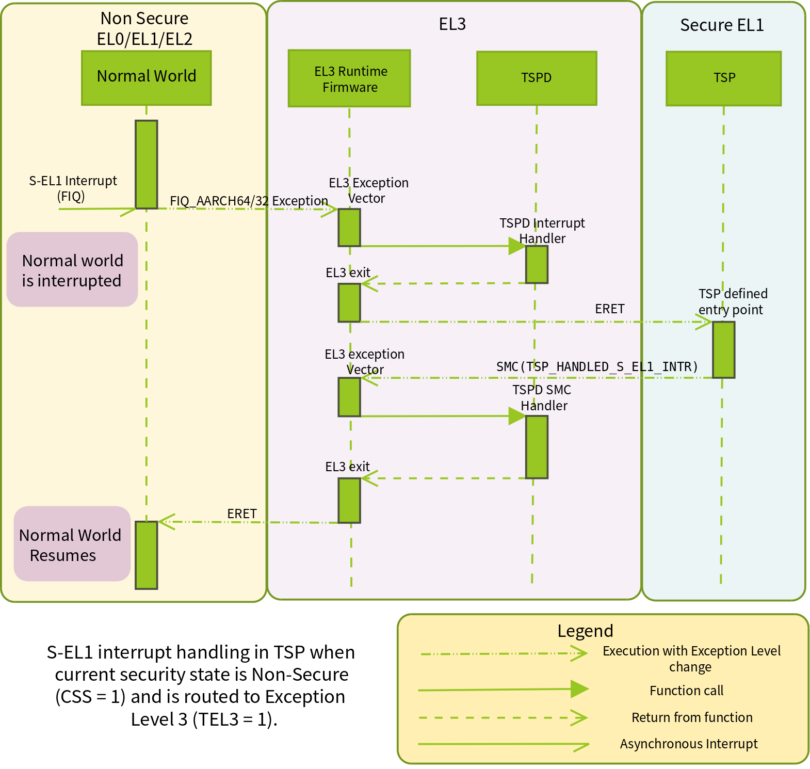
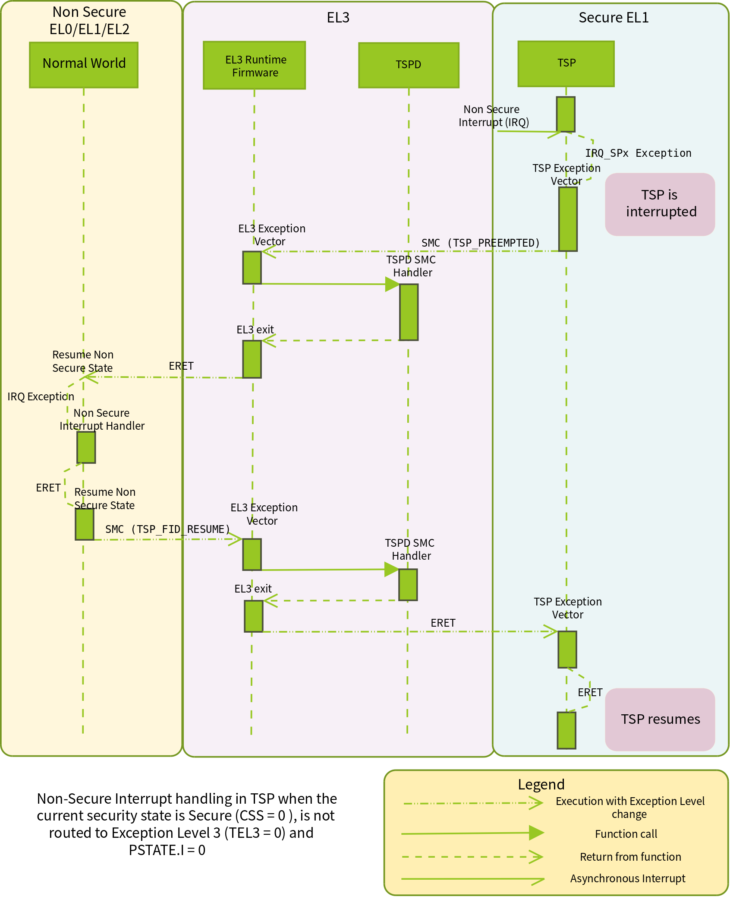

5. Interrupt Management Framework¶
This framework is responsible for managing interrupts routed to EL3. It also allows EL3 software to configure the interrupt routing behavior. Its main objective is to implement the following two requirements.
It should be possible to route interrupts meant to be handled by secure software (Secure interrupts) to EL3, when execution is in non-secure state (normal world). The framework should then take care of handing control of the interrupt to either software in EL3 or Secure-EL1 depending upon the software configuration and the GIC implementation. This requirement ensures that secure interrupts are under the control of the secure software with respect to their delivery and handling without the possibility of intervention from non-secure software.
It should be possible to route interrupts meant to be handled by non-secure software (Non-secure interrupts) to the last executed exception level in the normal world when the execution is in secure world at exception levels lower than EL3. This could be done with or without the knowledge of software executing in Secure-EL1/Secure-EL0. The choice of approach should be governed by the secure software. This requirement ensures that non-secure software is able to execute in tandem with the secure software without overriding it.
5.1. Concepts¶
5.1.1. Interrupt types¶
The framework categorises an interrupt to be one of the following depending upon the exception level(s) it is handled in.
Secure EL1 interrupt. This type of interrupt can be routed to EL3 or Secure-EL1 depending upon the security state of the current execution context. It is always handled in Secure-EL1.
Non-secure interrupt. This type of interrupt can be routed to EL3, Secure-EL1, Non-secure EL1 or EL2 depending upon the security state of the current execution context. It is always handled in either Non-secure EL1 or EL2.
EL3 interrupt. This type of interrupt can be routed to EL3 or Secure-EL1 depending upon the security state of the current execution context. It is always handled in EL3.
The following constants define the various interrupt types in the framework implementation.
#define INTR_TYPE_S_EL1 0
#define INTR_TYPE_EL3 1
#define INTR_TYPE_NS 2
5.1.2. Routing model¶
A type of interrupt can be either generated as an FIQ or an IRQ. The target
exception level of an interrupt type is configured through the FIQ and IRQ bits
in the Secure Configuration Register at EL3 (SCR_EL3.FIQ and SCR_EL3.IRQ
bits). When SCR_EL3.FIQ=1, FIQs are routed to EL3. Otherwise they are routed
to the First Exception Level (FEL) capable of handling interrupts. When
SCR_EL3.IRQ=1, IRQs are routed to EL3. Otherwise they are routed to the
FEL. This register is configured independently by EL3 software for each security
state prior to entry into a lower exception level in that security state.
A routing model for a type of interrupt (generated as FIQ or IRQ) is defined as
its target exception level for each security state. It is represented by a
single bit for each security state. A value of 0 means that the interrupt
should be routed to the FEL. A value of 1 means that the interrupt should be
routed to EL3. A routing model is applicable only when execution is not in EL3.
The default routing model for an interrupt type is to route it to the FEL in either security state.
5.1.3. Valid routing models¶
The framework considers certain routing models for each type of interrupt to be incorrect as they conflict with the requirements mentioned in Section 1. The following sub-sections describe all the possible routing models and specify which ones are valid or invalid. EL3 interrupts are currently supported only for GIC version 3.0 (Arm GICv3) and only the Secure-EL1 and Non-secure interrupt types are supported for GIC version 2.0 (Arm GICv2) (see Assumptions in Interrupt Management Framework). The terminology used in the following sub-sections is explained below.
CSS. Current Security State.
0when secure and1when non-secureTEL3. Target Exception Level 3.
0when targeted to the FEL.1when targeted to EL3.
5.1.3.1. Secure-EL1 interrupts¶
CSS=0, TEL3=0. Interrupt is routed to the FEL when execution is in secure state. This is a valid routing model as secure software is in control of handling secure interrupts.
CSS=0, TEL3=1. Interrupt is routed to EL3 when execution is in secure state. This is a valid routing model as secure software in EL3 can handover the interrupt to Secure-EL1 for handling.
CSS=1, TEL3=0. Interrupt is routed to the FEL when execution is in non-secure state. This is an invalid routing model as a secure interrupt is not visible to the secure software which violates the motivation behind the Arm Security Extensions.
CSS=1, TEL3=1. Interrupt is routed to EL3 when execution is in non-secure state. This is a valid routing model as secure software in EL3 can handover the interrupt to Secure-EL1 for handling.
5.1.3.2. Non-secure interrupts¶
CSS=0, TEL3=0. Interrupt is routed to the FEL when execution is in secure state. This allows the secure software to trap non-secure interrupts, perform its book-keeping and hand the interrupt to the non-secure software through EL3. This is a valid routing model as secure software is in control of how its execution is preempted by non-secure interrupts.
CSS=0, TEL3=1. Interrupt is routed to EL3 when execution is in secure state. This is a valid routing model as secure software in EL3 can save the state of software in Secure-EL1/Secure-EL0 before handing the interrupt to non-secure software. This model requires additional coordination between Secure-EL1 and EL3 software to ensure that the former’s state is correctly saved by the latter.
CSS=1, TEL3=0. Interrupt is routed to FEL when execution is in non-secure state. This is a valid routing model as a non-secure interrupt is handled by non-secure software.
CSS=1, TEL3=1. Interrupt is routed to EL3 when execution is in non-secure state. This is an invalid routing model as there is no valid reason to route the interrupt to EL3 software and then hand it back to non-secure software for handling.
5.1.3.3. EL3 interrupts¶
CSS=0, TEL3=0. Interrupt is routed to the FEL when execution is in Secure-EL1/Secure-EL0. This is a valid routing model as secure software in Secure-EL1/Secure-EL0 is in control of how its execution is preempted by EL3 interrupt and can handover the interrupt to EL3 for handling.
However, when
EL3_EXCEPTION_HANDLINGis1, this routing model is invalid as EL3 interrupts are unconditionally routed to EL3, and EL3 interrupts will always preempt Secure EL1/EL0 execution. See exception handling documentation.CSS=0, TEL3=1. Interrupt is routed to EL3 when execution is in Secure-EL1/Secure-EL0. This is a valid routing model as secure software in EL3 can handle the interrupt.
CSS=1, TEL3=0. Interrupt is routed to the FEL when execution is in non-secure state. This is an invalid routing model as a secure interrupt is not visible to the secure software which violates the motivation behind the Arm Security Extensions.
CSS=1, TEL3=1. Interrupt is routed to EL3 when execution is in non-secure state. This is a valid routing model as secure software in EL3 can handle the interrupt.
5.1.4. Mapping of interrupt type to signal¶
The framework is meant to work with any interrupt controller implemented by a
platform. A interrupt controller could generate a type of interrupt as either an
FIQ or IRQ signal to the CPU depending upon the current security state. The
mapping between the type and signal is known only to the platform. The framework
uses this information to determine whether the IRQ or the FIQ bit should be
programmed in SCR_EL3 while applying the routing model for a type of
interrupt. The platform provides this information through the
plat_interrupt_type_to_line() API (described in the
Porting Guide). For example, on the FVP port when the platform uses an
Arm GICv2 interrupt controller, Secure-EL1 interrupts are signaled through the
FIQ signal while Non-secure interrupts are signaled through the IRQ signal.
This applies when execution is in either security state.
5.1.4.1. Effect of mapping of several interrupt types to one signal¶
It should be noted that if more than one interrupt type maps to a single interrupt signal, and if any one of the interrupt type sets TEL3=1 for a particular security state, then interrupt signal will be routed to EL3 when in that security state. This means that all the other interrupt types using the same interrupt signal will be forced to the same routing model. This should be borne in mind when choosing the routing model for an interrupt type.
For example, in Arm GICv3, when the execution context is Secure-EL1/
Secure-EL0, both the EL3 and the non secure interrupt types map to the FIQ
signal. So if either one of the interrupt type sets the routing model so
that TEL3=1 when CSS=0, the FIQ bit in SCR_EL3 will be programmed to
route the FIQ signal to EL3 when executing in Secure-EL1/Secure-EL0, thereby
effectively routing the other interrupt type also to EL3.
5.2. Assumptions in Interrupt Management Framework¶
The framework makes the following assumptions to simplify its implementation.
Although the framework has support for 2 types of secure interrupts (EL3 and Secure-EL1 interrupt), only interrupt controller architectures like Arm GICv3 has architectural support for EL3 interrupts in the form of Group 0 interrupts. In Arm GICv2, all secure interrupts are assumed to be handled in Secure-EL1. They can be delivered to Secure-EL1 via EL3 but they cannot be handled in EL3.
Interrupt exceptions (
PSTATE.IandFbits) are masked during execution in EL3.Interrupt management: the following sections describe how interrupts are managed by the interrupt handling framework. This entails:
Providing an interface to allow registration of a handler and specification of the routing model for a type of interrupt.
Implementing support to hand control of an interrupt type to its registered handler when the interrupt is generated.
Both aspects of interrupt management involve various components in the secure software stack spanning from EL3 to Secure-EL1. These components are described in the section Software components. The framework stores information associated with each type of interrupt in the following data structure.
typedef struct intr_type_desc {
interrupt_type_handler_t handler;
uint32_t flags;
uint32_t scr_el3[2];
} intr_type_desc_t;
The flags field stores the routing model for the interrupt type in
bits[1:0]. Bit[0] stores the routing model when execution is in the secure
state. Bit[1] stores the routing model when execution is in the non-secure
state. As mentioned in Section Routing model, a value of 0 implies that
the interrupt should be targeted to the FEL. A value of 1 implies that it
should be targeted to EL3. The remaining bits are reserved and SBZ. The helper
macro set_interrupt_rm_flag() should be used to set the bits in the
flags parameter.
The scr_el3[2] field also stores the routing model but as a mapping of the
model in the flags field to the corresponding bit in the SCR_EL3 for each
security state.
The framework also depends upon the platform port to configure the interrupt controller to distinguish between secure and non-secure interrupts. The platform is expected to be aware of the secure devices present in the system and their associated interrupt numbers. It should configure the interrupt controller to enable the secure interrupts, ensure that their priority is always higher than the non-secure interrupts and target them to the primary CPU. It should also export the interface described in the Porting Guide to enable handling of interrupts.
In the remainder of this document, for the sake of simplicity a Arm GICv2 system is considered and it is assumed that the FIQ signal is used to generate Secure-EL1 interrupts and the IRQ signal is used to generate non-secure interrupts in either security state. EL3 interrupts are not considered.
5.3. Software components¶
Roles and responsibilities for interrupt management are sub-divided between the following components of software running in EL3 and Secure-EL1. Each component is briefly described below.
EL3 Runtime Firmware. This component is common to all ports of TF-A.
Secure Payload Dispatcher (SPD) service. This service interfaces with the Secure Payload (SP) software which runs in Secure-EL1/Secure-EL0 and is responsible for switching execution between secure and non-secure states. A switch is triggered by a Secure Monitor Call and it uses the APIs exported by the Context management library to implement this functionality. Switching execution between the two security states is a requirement for interrupt management as well. This results in a significant dependency on the SPD service. TF-A implements an example Test Secure Payload Dispatcher (TSPD) service.
An SPD service plugs into the EL3 runtime firmware and could be common to some ports of TF-A.
Secure Payload (SP). On a production system, the Secure Payload corresponds to a Secure OS which runs in Secure-EL1/Secure-EL0. It interfaces with the SPD service to manage communication with non-secure software. TF-A implements an example secure payload called Test Secure Payload (TSP) which runs only in Secure-EL1.
A Secure payload implementation could be common to some ports of TF-A, just like the SPD service.
5.4. Interrupt registration¶
This section describes in detail the role of each software component (see Software components) during the registration of a handler for an interrupt type.
5.4.1. EL3 runtime firmware¶
This component declares the following prototype for a handler of an interrupt type.
typedef uint64_t (*interrupt_type_handler_t)(uint32_t id,
uint32_t flags,
void *handle,
void *cookie);
The id is parameter is reserved and could be used in the future for passing
the interrupt id of the highest pending interrupt only if there is a foolproof
way of determining the id. Currently it contains INTR_ID_UNAVAILABLE.
The flags parameter contains miscellaneous information as follows.
Security state, bit[0]. This bit indicates the security state of the lower exception level when the interrupt was generated. A value of
1means that it was in the non-secure state. A value of0indicates that it was in the secure state. This bit can be used by the handler to ensure that interrupt was generated and routed as per the routing model specified during registration.Reserved, bits[31:1]. The remaining bits are reserved for future use.
The handle parameter points to the cpu_context structure of the current CPU
for the security state specified in the flags parameter.
Once the handler routine completes, execution will return to either the secure
or non-secure state. The handler routine must return a pointer to
cpu_context structure of the current CPU for the target security state. On
AArch64, this return value is currently ignored by the caller as the
appropriate cpu_context to be used is expected to be set by the handler
via the context management library APIs.
A portable interrupt handler implementation must set the target context both in
the structure pointed to by the returned pointer and via the context management
library APIs. The handler should treat all error conditions as critical errors
and take appropriate action within its implementation e.g. use assertion
failures.
The runtime firmware provides the following API for registering a handler for a particular type of interrupt. A Secure Payload Dispatcher service should use this API to register a handler for Secure-EL1 and optionally for non-secure interrupts. This API also requires the caller to specify the routing model for the type of interrupt.
int32_t register_interrupt_type_handler(uint32_t type,
interrupt_type_handler handler,
uint64_t flags);
The type parameter can be one of the three interrupt types listed above i.e.
INTR_TYPE_S_EL1, INTR_TYPE_NS & INTR_TYPE_EL3. The flags parameter
is as described in Section 2.
The function will return 0 upon a successful registration. It will return
-EALREADY in case a handler for the interrupt type has already been
registered. If the type is unrecognised or the flags or the handler are
invalid it will return -EINVAL.
Interrupt routing is governed by the configuration of the SCR_EL3.FIQ/IRQ bits
prior to entry into a lower exception level in either security state. The
context management library maintains a copy of the SCR_EL3 system register for
each security state in the cpu_context structure of each CPU. It exports the
following APIs to let EL3 Runtime Firmware program and retrieve the routing
model for each security state for the current CPU. The value of SCR_EL3 stored
in the cpu_context is used by the el3_exit() function to program the
SCR_EL3 register prior to returning from the EL3 exception level.
uint32_t cm_get_scr_el3(uint32_t security_state);
void cm_write_scr_el3_bit(uint32_t security_state,
uint32_t bit_pos,
uint32_t value);
cm_get_scr_el3() returns the value of the SCR_EL3 register for the specified
security state of the current CPU. cm_write_scr_el3_bit() writes a 0 or 1
to the bit specified by bit_pos. register_interrupt_type_handler() invokes
set_routing_model() API which programs the SCR_EL3 according to the routing
model using the cm_get_scr_el3() and cm_write_scr_el3_bit() APIs.
It is worth noting that in the current implementation of the framework, the EL3 runtime firmware is responsible for programming the routing model. The SPD is responsible for ensuring that the routing model has been adhered to upon receiving an interrupt.
5.4.2. Secure payload dispatcher¶
A SPD service is responsible for determining and maintaining the interrupt
routing model supported by itself and the Secure Payload. It is also responsible
for ferrying interrupts between secure and non-secure software depending upon
the routing model. It could determine the routing model at build time or at
runtime. It must use this information to register a handler for each interrupt
type using the register_interrupt_type_handler() API in EL3 runtime firmware.
If the routing model is not known to the SPD service at build time, then it must
be provided by the SP as the result of its initialisation. The SPD should
program the routing model only after SP initialisation has completed e.g. in the
SPD initialisation function pointed to by the bl32_init variable.
The SPD should determine the mechanism to pass control to the Secure Payload after receiving an interrupt from the EL3 runtime firmware. This information could either be provided to the SPD service at build time or by the SP at runtime.
5.4.3. Test secure payload dispatcher behavior¶
Note
Where this document discusses TSP_NS_INTR_ASYNC_PREEMPT as being
1, the same results also apply when EL3_EXCEPTION_HANDLING is 1.
The TSPD only handles Secure-EL1 interrupts and is provided with the following routing model at build time.
Secure-EL1 interrupts are routed to EL3 when execution is in non-secure state and are routed to the FEL when execution is in the secure state i.e CSS=0, TEL3=0 & CSS=1, TEL3=1 for Secure-EL1 interrupts
When the build flag
TSP_NS_INTR_ASYNC_PREEMPTis zero, the default routing model is used for non-secure interrupts. They are routed to the FEL in either security state i.e CSS=0, TEL3=0 & CSS=1, TEL3=0 for Non-secure interrupts.When the build flag
TSP_NS_INTR_ASYNC_PREEMPTis defined to 1, then the non secure interrupts are routed to EL3 when execution is in secure state i.e CSS=0, TEL3=1 for non-secure interrupts. This effectively preempts Secure-EL1. The default routing model is used for non secure interrupts in non-secure state. i.e CSS=1, TEL3=0.
It performs the following actions in the tspd_init() function to fulfill the
requirements mentioned earlier.
It passes control to the Test Secure Payload to perform its initialisation. The TSP provides the address of the vector table
tsp_vectorsin the SP which also includes the handler for Secure-EL1 interrupts in thesel1_intr_entryfield. The TSPD passes control to the TSP at this address when it receives a Secure-EL1 interrupt.The handover agreement between the TSP and the TSPD requires that the TSPD masks all interrupts (
PSTATE.DAIFbits) when it callstsp_sel1_intr_entry(). The TSP has to preserve the callee saved general purpose, SP_EL1/Secure-EL0, LR, VFP and system registers. It can usex0-x18to enable its C runtime.The TSPD implements a handler function for Secure-EL1 interrupts. This function is registered with the EL3 runtime firmware using the
register_interrupt_type_handler()API as follows/* Forward declaration */ interrupt_type_handler tspd_secure_el1_interrupt_handler; int32_t rc, flags = 0; set_interrupt_rm_flag(flags, NON_SECURE); rc = register_interrupt_type_handler(INTR_TYPE_S_EL1, tspd_secure_el1_interrupt_handler, flags); if (rc) panic();
When the build flag
TSP_NS_INTR_ASYNC_PREEMPTis defined to 1, the TSPD implements a handler function for non-secure interrupts. This function is registered with the EL3 runtime firmware using theregister_interrupt_type_handler()API as follows/* Forward declaration */ interrupt_type_handler tspd_ns_interrupt_handler; int32_t rc, flags = 0; set_interrupt_rm_flag(flags, SECURE); rc = register_interrupt_type_handler(INTR_TYPE_NS, tspd_ns_interrupt_handler, flags); if (rc) panic();
5.4.4. Secure payload¶
A Secure Payload must implement an interrupt handling framework at Secure-EL1 (Secure-EL1 IHF) to support its chosen interrupt routing model. Secure payload execution will alternate between the below cases.
In the code where IRQ, FIQ or both interrupts are enabled, if an interrupt type is targeted to the FEL, then it will be routed to the Secure-EL1 exception vector table. This is defined as the asynchronous mode of handling interrupts. This mode applies to both Secure-EL1 and non-secure interrupts.
In the code where both interrupts are disabled, if an interrupt type is targeted to the FEL, then execution will eventually migrate to the non-secure state. Any non-secure interrupts will be handled as described in the routing model where CSS=1 and TEL3=0. Secure-EL1 interrupts will be routed to EL3 (as per the routing model where CSS=1 and TEL3=1) where the SPD service will hand them to the SP. This is defined as the synchronous mode of handling interrupts.
The interrupt handling framework implemented by the SP should support one or both these interrupt handling models depending upon the chosen routing model.
The following list briefly describes how the choice of a valid routing model (see Valid routing models) effects the implementation of the Secure-EL1 IHF. If the choice of the interrupt routing model is not known to the SPD service at compile time, then the SP should pass this information to the SPD service at runtime during its initialisation phase.
As mentioned earlier, an Arm GICv2 system is considered and it is assumed that the FIQ signal is used to generate Secure-EL1 interrupts and the IRQ signal is used to generate non-secure interrupts in either security state.
5.4.4.1. Secure payload IHF design w.r.t secure-EL1 interrupts¶
CSS=0, TEL3=0. If
PSTATE.F=0, Secure-EL1 interrupts will be triggered at one of the Secure-EL1 FIQ exception vectors. The Secure-EL1 IHF should implement support for handling FIQ interrupts asynchronously.If
PSTATE.F=1then Secure-EL1 interrupts will be handled as per the synchronous interrupt handling model. The SP could implement this scenario by exporting a separate entrypoint for Secure-EL1 interrupts to the SPD service during the registration phase. The SPD service would also need to know the state of the system, general purpose and thePSTATEregisters in which it should arrange to return execution to the SP. The SP should provide this information in an implementation defined way during the registration phase if it is not known to the SPD service at build time.CSS=1, TEL3=1. Interrupts are routed to EL3 when execution is in non-secure state. They should be handled through the synchronous interrupt handling model as described in 1. above.
CSS=0, TEL3=1. Secure-EL1 interrupts are routed to EL3 when execution is in secure state. They will not be visible to the SP. The
PSTATE.Fbit in Secure-EL1/Secure-EL0 will not mask FIQs. The EL3 runtime firmware will call the handler registered by the SPD service for Secure-EL1 interrupts. Secure-EL1 IHF should then handle all Secure-EL1 interrupt through the synchronous interrupt handling model described in 1. above.
5.4.4.2. Secure payload IHF design w.r.t non-secure interrupts¶
CSS=0, TEL3=0. If
PSTATE.I=0, non-secure interrupts will be triggered at one of the Secure-EL1 IRQ exception vectors . The Secure-EL1 IHF should co-ordinate with the SPD service to transfer execution to the non-secure state where the interrupt should be handled e.g the SP could allocate a function identifier to issue a SMC64 or SMC32 to the SPD service which indicates that the SP execution has been preempted by a non-secure interrupt. If this function identifier is not known to the SPD service at compile time then the SP could provide it during the registration phase.If
PSTATE.I=1then the non-secure interrupt will pend until execution resumes in the non-secure state.CSS=0, TEL3=1. Non-secure interrupts are routed to EL3. They will not be visible to the SP. The
PSTATE.Ibit in Secure-EL1/Secure-EL0 will have not effect. The SPD service should register a non-secure interrupt handler which should save the SP state correctly and resume execution in the non-secure state where the interrupt will be handled. The Secure-EL1 IHF does not need to take any action.CSS=1, TEL3=0. Non-secure interrupts are handled in the FEL in non-secure state (EL1/EL2) and are not visible to the SP. This routing model does not affect the SP behavior.
A Secure Payload must also ensure that all Secure-EL1 interrupts are correctly configured at the interrupt controller by the platform port of the EL3 runtime firmware. It should configure any additional Secure-EL1 interrupts which the EL3 runtime firmware is not aware of through its platform port.
5.4.5. Test secure payload behavior¶
The routing model for Secure-EL1 and non-secure interrupts chosen by the TSP is described in Section Secure Payload Dispatcher. It is known to the TSPD service at build time.
The TSP implements an entrypoint (tsp_sel1_intr_entry()) for handling Secure-EL1
interrupts taken in non-secure state and routed through the TSPD service
(synchronous handling model). It passes the reference to this entrypoint via
tsp_vectors to the TSPD service.
The TSP also replaces the default exception vector table referenced through the
early_exceptions variable, with a vector table capable of handling FIQ and IRQ
exceptions taken at the same (Secure-EL1) exception level. This table is
referenced through the tsp_exceptions variable and programmed into the
VBAR_EL1. It caters for the asynchronous handling model.
The TSP also programs the Secure Physical Timer in the Arm Generic Timer block to raise a periodic interrupt (every half a second) for the purpose of testing interrupt management across all the software components listed in Software components.
5.5. Interrupt handling¶
This section describes in detail the role of each software component (see Section Software components) in handling an interrupt of a particular type.
5.5.1. EL3 runtime firmware¶
The EL3 runtime firmware populates the IRQ and FIQ exception vectors referenced
by the runtime_exceptions variable as follows.
IRQ and FIQ exceptions taken from the current exception level with
SP_EL0orSP_EL3are reported as irrecoverable error conditions. As mentioned earlier, EL3 runtime firmware always executes with thePSTATE.IandPSTATE.Fbits set.The following text describes how the IRQ and FIQ exceptions taken from a lower exception level using AArch64 or AArch32 are handled.
When an interrupt is generated, the vector for each interrupt type is responsible for:
Saving the entire general purpose register context (x0-x30) immediately upon exception entry. The registers are saved in the per-cpu
cpu_contextdata structure referenced by theSP_EL3register.Saving the
ELR_EL3,SP_EL0andSPSR_EL3system registers in the per-cpucpu_contextdata structure referenced by theSP_EL3register.Switching to the C runtime stack by restoring the
CTX_RUNTIME_SPvalue from the per-cpucpu_contextdata structure inSP_EL0and executing themsr spsel, #0instruction.Determining the type of interrupt. Secure-EL1 interrupts will be signaled at the FIQ vector. Non-secure interrupts will be signaled at the IRQ vector. The platform should implement the following API to determine the type of the pending interrupt.
uint32_t plat_ic_get_interrupt_type(void);
It should return either
INTR_TYPE_S_EL1orINTR_TYPE_NS.Determining the handler for the type of interrupt that has been generated. The following API has been added for this purpose.
interrupt_type_handler get_interrupt_type_handler(uint32_t interrupt_type);
It returns the reference to the registered handler for this interrupt type. The
handleris retrieved from theintr_type_desc_tstructure as described in Section 2.NULLis returned if no handler has been registered for this type of interrupt. This scenario is reported as an irrecoverable error condition.Calling the registered handler function for the interrupt type generated. The
idparameter is set toINTR_ID_UNAVAILABLEcurrently. The id along with the current security state and a reference to thecpu_context_tstructure for the current security state are passed to the handler function as its arguments.The handler function returns a reference to the per-cpu
cpu_context_tstructure for the target security state.Calling
el3_exit()to return from EL3 into a lower exception level in the security state determined by the handler routine. Theel3_exit()function is responsible for restoring the register context from thecpu_context_tdata structure for the target security state.
5.5.2. Secure payload dispatcher¶
5.5.2.1. Interrupt entry¶
The SPD service begins handling an interrupt when the EL3 runtime firmware calls the handler function for that type of interrupt. The SPD service is responsible for the following:
Validating the interrupt. This involves ensuring that the interrupt was generated according to the interrupt routing model specified by the SPD service during registration. It should use the security state of the exception level (passed in the
flagsparameter of the handler) where the interrupt was taken from to determine this. If the interrupt is not recognised then the handler should treat it as an irrecoverable error condition.An SPD service can register a handler for Secure-EL1 and/or Non-secure interrupts. A non-secure interrupt should never be routed to EL3 from from non-secure state. Also if a routing model is chosen where Secure-EL1 interrupts are routed to S-EL1 when execution is in Secure state, then a S-EL1 interrupt should never be routed to EL3 from secure state. The handler could use the security state flag to check this.
Determining whether a context switch is required. This depends upon the routing model and interrupt type. For non secure and S-EL1 interrupt, if the security state of the execution context where the interrupt was generated is not the same as the security state required for handling the interrupt, a context switch is required. The following 2 cases require a context switch from secure to non-secure or vice-versa:
A Secure-EL1 interrupt taken from the non-secure state should be routed to the Secure Payload.
A non-secure interrupt taken from the secure state should be routed to the last known non-secure exception level.
The SPD service must save the system register context of the current security state. It must then restore the system register context of the target security state. It should use the
cm_set_next_eret_context()API to ensure that the nextcpu_contextto be restored is of the target security state.If the target state is secure then execution should be handed to the SP as per the synchronous interrupt handling model it implements. A Secure-EL1 interrupt can be routed to EL3 while execution is in the SP. This implies that SP execution can be preempted while handling an interrupt by a another higher priority Secure-EL1 interrupt or a EL3 interrupt. The SPD service should be able to handle this preemption or manage secure interrupt priorities before handing control to the SP.
Setting the return value of the handler to the per-cpu
cpu_contextif the interrupt has been successfully validated and ready to be handled at a lower exception level.
The routing model allows non-secure interrupts to interrupt Secure-EL1 when in secure state if it has been configured to do so. The SPD service and the SP should implement a mechanism for routing these interrupts to the last known exception level in the non-secure state. The former should save the SP context, restore the non-secure context and arrange for entry into the non-secure state so that the interrupt can be handled.
5.5.2.2. Interrupt exit¶
When the Secure Payload has finished handling a Secure-EL1 interrupt, it could return control back to the SPD service through a SMC32 or SMC64. The SPD service should handle this secure monitor call so that execution resumes in the exception level and the security state from where the Secure-EL1 interrupt was originally taken.
5.5.2.3. Test secure payload dispatcher Secure-EL1 interrupt handling¶
The example TSPD service registers a handler for Secure-EL1 interrupts taken
from the non-secure state. During execution in S-EL1, the TSPD expects that the
Secure-EL1 interrupts are handled in S-EL1 by TSP. Its handler
tspd_secure_el1_interrupt_handler() expects only to be invoked for Secure-EL1
originating from the non-secure state. It takes the following actions upon being
invoked.
It uses the security state provided in the
flagsparameter to ensure that the secure interrupt originated from the non-secure state. It asserts if this is not the case.It saves the system register context for the non-secure state by calling
cm_el1_sysregs_context_save(NON_SECURE);.It sets the
ELR_EL3system register totsp_sel1_intr_entryand sets theSPSR_EL3.DAIFbits in the secure CPU context. It setsx0toTSP_HANDLE_SEL1_INTR_AND_RETURN. If the TSP was preempted earlier by a non secure interrupt duringyieldingSMC processing, save the registers that will be trashed, which is theELR_EL3andSPSR_EL3, in order to be able to re-enter TSP for Secure-EL1 interrupt processing. It does not need to save any other secure context since the TSP is expected to preserve it (see section Test secure payload dispatcher behavior).It restores the system register context for the secure state by calling
cm_el1_sysregs_context_restore(SECURE);.It ensures that the secure CPU context is used to program the next exception return from EL3 by calling
cm_set_next_eret_context(SECURE);.It returns the per-cpu
cpu_contextto indicate that the interrupt can now be handled by the SP.x1is written with the value ofelr_el3register for the non-secure state. This information is used by the SP for debugging purposes.
The figure below describes how the interrupt handling is implemented by the TSPD when a Secure-EL1 interrupt is generated when execution is in the non-secure state.

The TSP issues an SMC with TSP_HANDLED_S_EL1_INTR as the function identifier to
signal completion of interrupt handling.
The TSPD service takes the following actions in tspd_smc_handler() function
upon receiving an SMC with TSP_HANDLED_S_EL1_INTR as the function identifier:
It ensures that the call originated from the secure state otherwise execution returns to the non-secure state with
SMC_UNKinx0.It restores the saved
ELR_EL3andSPSR_EL3system registers back to the secure CPU context (see step 3 above) in case the TSP had been preempted by a non secure interrupt earlier.It restores the system register context for the non-secure state by calling
cm_el1_sysregs_context_restore(NON_SECURE).It ensures that the non-secure CPU context is used to program the next exception return from EL3 by calling
cm_set_next_eret_context(NON_SECURE).tspd_smc_handler()returns a reference to the non-securecpu_contextas the return value.
5.5.2.4. Test secure payload dispatcher non-secure interrupt handling¶
The TSP in Secure-EL1 can be preempted by a non-secure interrupt during
yielding SMC processing or by a higher priority EL3 interrupt during
Secure-EL1 interrupt processing. When EL3_EXCEPTION_HANDLING is 0, only
non-secure interrupts can cause preemption of TSP since there are no EL3
interrupts in the system. With EL3_EXCEPTION_HANDLING=1 however, any EL3
interrupt may preempt Secure execution.
It should be noted that while TSP is preempted, the TSPD only allows entry into
the TSP either for Secure-EL1 interrupt handling or for resuming the preempted
yielding SMC in response to the TSP_FID_RESUME SMC from the normal world.
(See Section Implication of preempted SMC on Non-Secure Software).
The non-secure interrupt triggered in Secure-EL1 during yielding SMC
processing can be routed to either EL3 or Secure-EL1 and is controlled by build
option TSP_NS_INTR_ASYNC_PREEMPT (see Section Test secure payload
dispatcher behavior). If the build option is set, the TSPD will set the
routing model for the non-secure interrupt to be routed to EL3 from secure state
i.e. TEL3=1, CSS=0 and registers tspd_ns_interrupt_handler() as the
non-secure interrupt handler. The tspd_ns_interrupt_handler() on being
invoked ensures that the interrupt originated from the secure state and disables
routing of non-secure interrupts from secure state to EL3. This is to prevent
further preemption (by a non-secure interrupt) when TSP is reentered for
handling Secure-EL1 interrupts that triggered while execution was in the normal
world. The tspd_ns_interrupt_handler() then invokes
tspd_handle_sp_preemption() for further handling.
If the TSP_NS_INTR_ASYNC_PREEMPT build option is zero (default), the default
routing model for non-secure interrupt in secure state is in effect
i.e. TEL3=0, CSS=0. During yielding SMC processing, the IRQ
exceptions are unmasked i.e. PSTATE.I=0, and a non-secure interrupt will
trigger at Secure-EL1 IRQ exception vector. The TSP saves the general purpose
register context and issues an SMC with TSP_PREEMPTED as the function
identifier to signal preemption of TSP. The TSPD SMC handler,
tspd_smc_handler(), ensures that the SMC call originated from the
secure state otherwise execution returns to the non-secure state with
SMC_UNK in x0. It then invokes tspd_handle_sp_preemption() for
further handling.
The tspd_handle_sp_preemption() takes the following actions upon being
invoked:
It saves the system register context for the secure state by calling
cm_el1_sysregs_context_save(SECURE).It restores the system register context for the non-secure state by calling
cm_el1_sysregs_context_restore(NON_SECURE).It ensures that the non-secure CPU context is used to program the next exception return from EL3 by calling
cm_set_next_eret_context(NON_SECURE).SMC_PREEMPTEDis set in x0 and return to non secure state after restoring non secure context.
The Normal World is expected to resume the TSP after the yielding SMC
preemption by issuing an SMC with TSP_FID_RESUME as the function identifier
(see section Implication of preempted SMC on Non-Secure Software). The TSPD
service takes the following actions in tspd_smc_handler() function upon
receiving this SMC:
It ensures that the call originated from the non secure state. An assertion is raised otherwise.
Checks whether the TSP needs a resume i.e check if it was preempted. It then saves the system register context for the non-secure state by calling
cm_el1_sysregs_context_save(NON_SECURE).Restores the secure context by calling
cm_el1_sysregs_context_restore(SECURE)It ensures that the secure CPU context is used to program the next exception return from EL3 by calling
cm_set_next_eret_context(SECURE).tspd_smc_handler()returns a reference to the securecpu_contextas the return value.
The figure below describes how the TSP/TSPD handle a non-secure interrupt when
it is generated during execution in the TSP with PSTATE.I = 0 when the
TSP_NS_INTR_ASYNC_PREEMPT build flag is 0.

5.5.3. Secure payload interrupt handling¶
The SP should implement one or both of the synchronous and asynchronous interrupt handling models depending upon the interrupt routing model it has chosen (as described in section Secure Payload).
In the synchronous model, it should begin handling a Secure-EL1 interrupt after
receiving control from the SPD service at an entrypoint agreed upon during build
time or during the registration phase. Before handling the interrupt, the SP
should save any Secure-EL1 system register context which is needed for resuming
normal execution in the SP later e.g. SPSR_EL1, ELR_EL1. After handling
the interrupt, the SP could return control back to the exception level and
security state where the interrupt was originally taken from. The SP should use
an SMC32 or SMC64 to ask the SPD service to do this.
In the asynchronous model, the Secure Payload is responsible for handling
non-secure and Secure-EL1 interrupts at the IRQ and FIQ vectors in its exception
vector table when PSTATE.I and PSTATE.F bits are 0. As described earlier,
when a non-secure interrupt is generated, the SP should coordinate with the SPD
service to pass control back to the non-secure state in the last known exception
level. This will allow the non-secure interrupt to be handled in the non-secure
state.
5.5.3.1. Test secure payload behavior¶
The TSPD hands control of a Secure-EL1 interrupt to the TSP at the
tsp_sel1_intr_entry(). The TSP handles the interrupt while ensuring that the
handover agreement described in Section Test secure payload dispatcher
behavior is maintained. It updates some statistics by calling
tsp_update_sync_sel1_intr_stats(). It then calls
tsp_common_int_handler() which.
Checks whether the interrupt is the secure physical timer interrupt. It uses the platform API
plat_ic_get_pending_interrupt_id()to get the interrupt number. If it is not the secure physical timer interrupt, then that means that a higher priority interrupt has preempted it. Invoketsp_handle_preemption()to handover control back to EL3 by issuing an SMC withTSP_PREEMPTEDas the function identifier.Handles the secure timer interrupt interrupt by acknowledging it using the
plat_ic_acknowledge_interrupt()platform API, callingtsp_generic_timer_handler()to reprogram the secure physical generic timer and calling theplat_ic_end_of_interrupt()platform API to signal end of interrupt processing.
The TSP passes control back to the TSPD by issuing an SMC64 with
TSP_HANDLED_S_EL1_INTR as the function identifier.
The TSP handles interrupts under the asynchronous model as follows.
Secure-EL1 interrupts are handled by calling the
tsp_common_int_handler()function. The function has been described above.Non-secure interrupts are handled by calling the
tsp_common_int_handler()function which ends up invokingtsp_handle_preemption()and issuing an SMC64 withTSP_PREEMPTEDas the function identifier. Execution resumes at the instruction that follows this SMC instruction when the TSPD hands control to the TSP in response to an SMC withTSP_FID_RESUMEas the function identifier from the non-secure state (see section Test secure payload dispatcher non-secure interrupt handling).
5.6. Other considerations¶
5.6.1. Implication of preempted SMC on Non-Secure Software¶
A yielding SMC call to Secure payload can be preempted by a non-secure
interrupt and the execution can return to the non-secure world for handling
the interrupt (For details on yielding SMC refer SMC calling convention).
In this case, the SMC call has not completed its execution and the execution
must return back to the secure payload to resume the preempted SMC call.
This can be achieved by issuing an SMC call which instructs to resume the
preempted SMC.
A fast SMC cannot be preempted and hence this case will not happen for
a fast SMC call.
In the Test Secure Payload implementation, TSP_FID_RESUME is designated
as the resume SMC FID. It is important to note that TSP_FID_RESUME is a
yielding SMC which means it too can be be preempted. The typical non
secure software sequence for issuing a yielding SMC would look like this,
assuming P.STATE.I=0 in the non secure state :
int rc;
rc = smc(TSP_YIELD_SMC_FID, ...); /* Issue a Yielding SMC call */
/* The pending non-secure interrupt is handled by the interrupt handler
and returns back here. */
while (rc == SMC_PREEMPTED) { /* Check if the SMC call is preempted */
rc = smc(TSP_FID_RESUME); /* Issue resume SMC call */
}
The TSP_YIELD_SMC_FID is any yielding SMC function identifier and the smc()
function invokes a SMC call with the required arguments. The pending non-secure
interrupt causes an IRQ exception and the IRQ handler registered at the
exception vector handles the non-secure interrupt and returns. The return value
from the SMC call is tested for SMC_PREEMPTED to check whether it is
preempted. If it is, then the resume SMC call TSP_FID_RESUME is issued. The
return value of the SMC call is tested again to check if it is preempted.
This is done in a loop till the SMC call succeeds or fails. If a yielding
SMC is preempted, until it is resumed using TSP_FID_RESUME SMC and
completed, the current TSPD prevents any other SMC call from re-entering
TSP by returning SMC_UNK error.
Copyright (c) 2014-2020, Arm Limited and Contributors. All rights reserved.